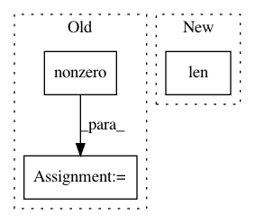

2d44d66f74c0be1f2952af80cc11a9076fd71e3c,chainercv/links/model/mask_rcnn/mask_head.py,,mask_loss_post,#Any#Any#Any#Any#Any#,275
Before Change
mask_loss = 0
for i in np.unique(cuda.to_cpu(mask_roi_indices)):
index = (mask_roi_indices == i).nonzero()[0]
gt_segm = gt_segms[index]
gt_mask_label = gt_mask_labels[index]
mask_loss += F.sigmoid_cross_entropy(
segms[index, gt_mask_label], gt_segm.astype(np.int32))
After Change
gt_mask_labels = xp.hstack(gt_mask_labels).astype(np.int32)
mask_loss = F.sigmoid_cross_entropy(
segms[np.arange(len(gt_mask_labels)), gt_mask_labels],
gt_segms.astype(np.int32))
return mask_loss
In pattern: SUPERPATTERN
Frequency: 3
Non-data size: 3
Instances
Project Name: chainer/chainercv
Commit Name: 2d44d66f74c0be1f2952af80cc11a9076fd71e3c
Time: 2019-03-04
Author: yuyuniitani@gmail.com
File Name: chainercv/links/model/mask_rcnn/mask_head.py
Class Name:
Method Name: mask_loss_post
Project Name: nipy/dipy
Commit Name: d905318117955f568498a5eb72d7b7e5a486d626
Time: 2015-01-25
Author: mrbago@gmail.com
File Name: dipy/reconst/csdeconv.py
Class Name:
Method Name: csdeconv
Project Name: OpenNMT/OpenNMT-py
Commit Name: 3a71ecffa3a8aff931a0ff865434e11e8ea08ba3
Time: 2018-10-22
Author: guillaume.klein@systrangroup.com
File Name: onmt/translate/translator.py
Class Name: Translator
Method Name: _fast_translate_batch